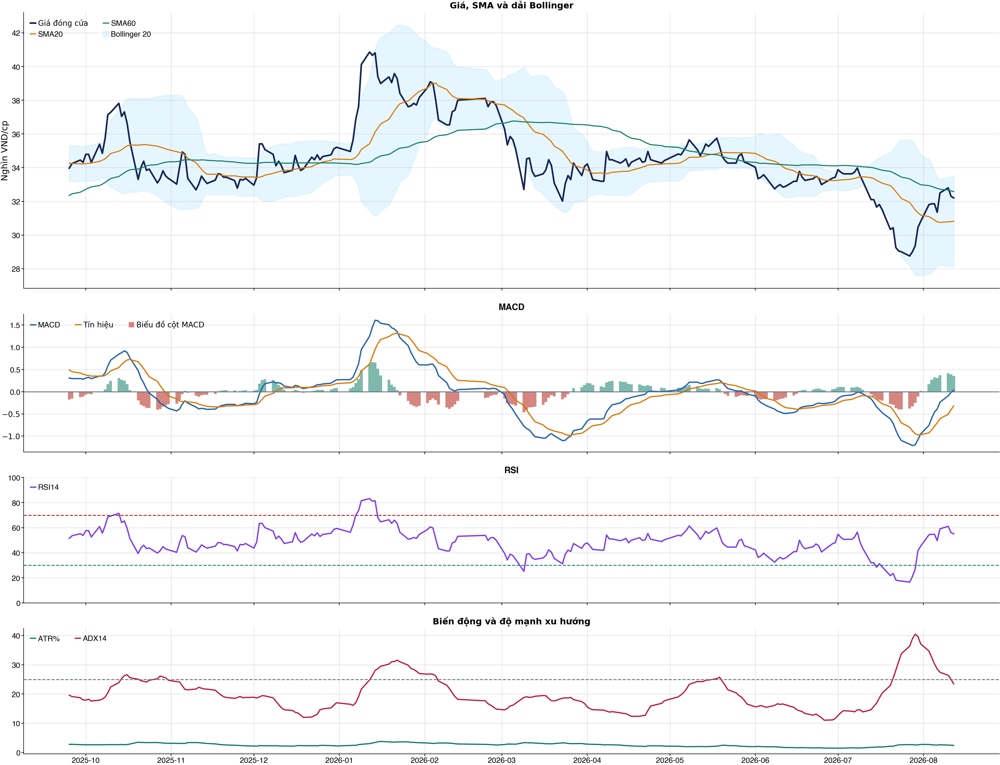
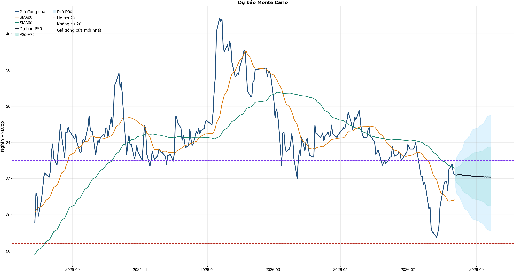
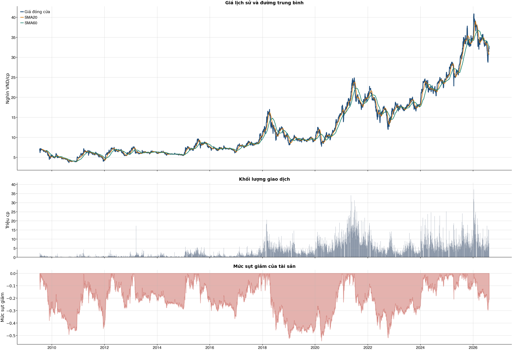

Kết quả chính
KPI đọc nhanh trước, chi tiết bấm mở bên dướiChi phí & vòng lệnh
Trọng tâm: tránh giao dịch nhiều làm phí ăn hết lợi thếBảng chính: turnover, gross, phí và net61 / 38 / 31 / 20 / 10 / 5 / 1
| Kịch bản | Cách chọn | Vòng | Gross trước phí | Phí | Net sau phí | Sharpe | Ghi chú |
|---|---|---|---|---|---|---|---|
| Gốc | Ngưỡng gốc ≥ 0.55 | 22 | +4.8% | 10.8% | -5.9% | -0.38 | Baseline 61 vòng nếu model phát tín hiệu nhiều. |
| Ngưỡng 0.58 | Chỉ vào lệnh khi xác suất ≥ 0.58 | 13 | +5.0% | 6.4% | -1.5% | -0.09 | Tăng ngưỡng để giảm vòng lệnh. |
| Ngưỡng 0.60 | Chỉ vào lệnh khi xác suất ≥ 0.60 | 7 | +1.4% | 3.4% | -2.0% | -0.31 | Tăng ngưỡng để giảm vòng lệnh. |
| Ngưỡng 0.62 | Chỉ vào lệnh khi xác suất ≥ 0.62 | 3 | +0.5% | 1.5% | -0.9% | -0.15 | Tăng ngưỡng để giảm vòng lệnh. |
| Giới hạn 10 vòng | Tối đa 10 vòng, ưu tiên xác suất cao hơn | 10 | +1.3% | 4.9% | -3.6% | -0.44 | Ngưỡng xác suất trong nhóm: 58.8%. |
| Giới hạn 5 vòng | Tối đa 5 vòng, ưu tiên xác suất cao hơn | 5 | +0.3% | 2.4% | -2.1% | -0.34 | Ngưỡng xác suất trong nhóm: 61.1%. |
| Giới hạn 1 vòng | Tối đa 1 vòng, ưu tiên xác suất cao hơn | 1 | +2.4% | 0.5% | +1.9% | 0.62 | Ngưỡng xác suất trong nhóm: 64.6%. |
Đọc bảng này từ trái sang phải: số vòng càng ít thì phí càng thấp, nhưng kết quả sau phí vẫn chỉ là kiểm thử OOS. Các dòng 10/5/1 giới hạn số vòng bằng xác suất model cao hơn, không phải chọn lệnh thắng sau khi biết kết quả và không tự biến NO_EDGE thành BUY.
Breakdown trước phí / sau phívì sao gross dương nhưng net âm
| Kịch bản trước chi phí | +4.8% | Gross PnL 4,811,418 VND; chưa trừ commission/slippage/tax. |
| Chi phí giao dịch | -10.8% | 22 vòng; entry 20.0 bps + exit 30.0 bps = 50.0 bps/vòng; tổng phí 10,698,101 VND. |
| Kịch bản sau chi phí | -5.9% | Net PnL -5,946,101 VND; gross - cost gap khoảng +10.8%. |
| Ngưỡng phí hòa vốn | 22.2 bps/vòng | Phí hiện tại 50.0 bps/vòng; cao hơn ngưỡng này thì gross dương vẫn có thể thành net âm. |
| Kết luận hành động | CHƯA CÓ LỢI THẾ (NO_EDGE) | Không mở vị thế mới; nếu đang giữ thì ưu tiên giảm/bán theo kỷ luật vì sau phí vẫn âm. |
| Cách cải thiện cần test | Giảm turnover | Hiện có 22 phiên active/22 vòng; nên test threshold 0.58/0.60/0.62 hoặc giữ nhiều phiên hơn. |
Kiểm thử chiến lược ngoài mẫu sau chi phí22 vòng
| Lợi nhuận ròng | -5.9% | 664 quan sát ngoài mẫu |
| Sharpe | -0.38 | Sau chi phí |
| Mức sụt giảm tối đa | -13.8% | 22 vòng giao dịch |
| Chi phí giả định | 50.0 bps | Một vòng mua và bán |
So sánh mô hìnhXGBoost vs Logistic
| XGBoost | 0.502 | AUC 0.490 |
| Logistic | 0.505 | AUC 0.490 |
| Đa số | 0.500 | Mốc so sánh |
Mức độ quan trọng của đặc trưngtop feature
| return_1d | 15.56 | Mức đóng góp |
| beta_60d | 15.45 | Mức đóng góp |
| atr_pct_14 | 14.85 | Mức đóng góp |
| close_vs_sma60 | 13.16 | Mức đóng góp |
| rsi_14 | 12.59 | Mức đóng góp |
| market_return_1d | 12.29 | Mức đóng góp |
| return_2d | 11.90 | Mức đóng góp |
| day_of_week | 11.42 | Mức đóng góp |
Điều kiện phát hành tín hiệuCHƯA CÓ LỢI THẾ (NO_EDGE)
| AUC của mô hình | KHÔNG ĐẠT | Điều kiện phát hành tín hiệu |
| Độ chính xác cân bằng của mô hình | KHÔNG ĐẠT | Điều kiện phát hành tín hiệu |
| XGBoost vượt mô hình Logistic đối chứng | ĐẠT | Điều kiện phát hành tín hiệu |
| Xác suất tăng đạt ngưỡng | KHÔNG ĐẠT | Điều kiện phát hành tín hiệu |
| Bối cảnh kỹ thuật đạt ngưỡng | KHÔNG ĐẠT | Điều kiện phát hành tín hiệu |
| Tỷ lệ lợi nhuận/rủi ro đạt ngưỡng | ĐẠT | Điều kiện phát hành tín hiệu |
| Dữ liệu còn mới | ĐẠT | Điều kiện phát hành tín hiệu |
| Có khối lượng vị thế hợp lệ | ĐẠT | Điều kiện phát hành tín hiệu |
| Có kết quả kiểm thử chiến lược ngoài mẫu | ĐẠT | Điều kiện phát hành tín hiệu |
| Mẫu kiểm thử chiến lược đủ lớn | ĐẠT | Điều kiện phát hành tín hiệu |
| Kiểm thử chiến lược có lợi thế ròng | KHÔNG ĐẠT | Điều kiện phát hành tín hiệu |
Quản trị rủi rostop / target
| Rủi ro/lệnh | 1.0% | 1,000,000 VND |
| Mức dừng lỗ | 31.05 | Rủi ro mỗi cổ phiếu 1.31 |
| Mục tiêu 1 | 35.49 | Lợi nhuận/rủi ro 2.38 |
| Mục tiêu 2 | 35.49 | Dự báo/kháng cự |
Kỹ thuật
Biểu đồ mở sẵn, bảng tín hiệu thu gọnBiểu đồ kỹ thuật

Tín hiệu kỹ thuậtchi tiết
| Xu hướng | Cẩn thận | Giá nằm dưới SMA60. |
| MACD | Tích cực | MACD trên signal, histogram dương. |
| RSI14 | Tích cực | RSI 55.1. |
| Bollinger | Ổn định | Giá nằm trong dải Bollinger. |
| ADX | Đi ngang | ADX 23.5. |
| Thanh khoản | Thấp | 0.56 lần trung bình. |
| Stochastic | Yếu lại | %K nằm dưới %D. |
Cơ bản & tin tức
Các bảng dài để trong nút bungPhân tích cơ bảnBCTC/tỷ số
| P/E | 6.24 | 2026-Q2 |
| P/B | 1.26 | 2026-Q2 |
| P/S | 2.58 | 2026-Q2 |
| ROE | 21.8% | 2026-Q2 |
| ROA | 1.4% | 2026-Q2 |
| Gross margin | 71.5% | 2026-Q2 |
| Net margin | 41.2% | 2026-Q2 |
| Debt/Equity | 13.79 | 2026-Q2 |
| Current ratio | 0.00 | 2026-Q2 |
| NPL | 1.2% | 2026-Q2 |
| CASA | 23.5% | 2026-Q2 |
| Dividend yield | 0.0% | 2026-Q2 |
| Market cap | 250,872.3 tỷ | 2026-Q2 |
| Revenue Growth | 26.1% | 2026-Q2 YoY |
| Profit Growth | 21.4% | 2026-Q2 YoY |
| CAPEX | -369.8 tỷ | 2026-Q2 |
| Lợi nhuận sau thuế | 11,783.5 tỷ | 2026-Q2 |
| Tổng tài sản | 2,962,003.7 tỷ | 2026-Q2 |
| Vốn chủ sở hữu | 200,214.3 tỷ | 2026-Q2 |
Tin tức doanh nghiệpresearch only
| Trạng thái | Có dữ liệu | research_only |
| Nguồn / số bài | VCI | 50 |
| Bài đủ timestamp | 50 | Chỉ các bài này mới được phép dùng point-in-time |
| Sentiment 5 ngày | 1.00 | 1.0 bài trước cutoff |
| Phương pháp | keyword_heuristic_v1 | Research only; chưa dùng làm tín hiệu mua/bán |
Dự báo
Kịch bản giá và lịch sử drawdownDự báo ngắn hạn20 phiên
| 2026-08-13 | 32.20 | P10 31.54 / P90 32.84 |
| 2026-08-14 | 32.19 | P10 31.18 / P90 33.17 |
| 2026-08-17 | 32.22 | P10 30.94 / P90 33.46 |
| 2026-08-18 | 32.23 | P10 30.77 / P90 33.56 |
| 2026-08-19 | 32.18 | P10 30.66 / P90 33.60 |
| 2026-08-20 | 32.18 | P10 30.49 / P90 33.81 |
| 2026-08-21 | 32.19 | P10 30.32 / P90 34.05 |
| 2026-08-24 | 32.17 | P10 30.23 / P90 34.21 |
Lịch giao dịch Việt Nam dùng cho forecastkhông tính T7/CN/lễ
VN stock calendar: loại Thứ Bảy/Chủ Nhật và các ngày nghỉ 2026 đã công bố; ngày làm bù Thứ Bảy không được tính là phiên giao dịch chứng khoán.
Ngày nghỉ đã loại: 2026-01-01, 2026-01-02, 2026-02-16, 2026-02-17, 2026-02-18, 2026-02-19, 2026-02-20, 2026-04-27, 2026-04-30, 2026-05-01, 2026-08-31, 2026-09-01, 2026-09-02
Nếu HOSE/HNX/UPCoM công bố nghỉ đột xuất, cần thêm ngày đó vào config `market_holidays` rồi chạy lại report.
Biểu đồ dự báo

Lịch sử giá và mức sụt giảm

Báo cáo dùng để học tập và lập kịch bản, không phải khuyến nghị mua/bán.
Phân tích AI có kiểm chứngbấm mở
Trạng thái quyết định: NO_EDGE
Tóm tắt: ML decision hiện giữ nguyên NO_EDGE. News Reader đã trích đoạn có nguồn của 3 bài để phân loại chủ đề (ket_qua_kinh_doanh: 1, co_tuc_va_hanh_dong_doanh_nghiep: 1, vi_mo: 1), nhưng các trích đoạn này không tạo bằng chứng mới cho quyết định đầu tư.
Kỹ thuật: Artifact kỹ thuật: bias Trung tính; điểm 0. Chi tiết artifact: Xu hướng: Cẩn thận (Giá nằm dưới SMA60.); MACD: Tích cực (MACD trên signal, histogram dương.); RSI14: Tích cực (RSI 55.1.); Bollinger: Ổn định (Giá nằm trong dải Bollinger.); ADX: Đi ngang (ADX 23.5.); Thanh khoản: Thấp (0.56 lần trung bình.); Stochastic: Yếu lại (%K nằm dưới %D.)
Cơ bản: Artifact cơ bản: VietinBank; kỳ 2026-Q2; P/E 6.24; P/B 1.26; ROE 21.8%; ROA 1.4%; Debt/Equity 13.79; Revenue Growth 26.1%; Profit Growth 21.4%.
Tin tức: Đã đọc trích đoạn giới hạn của 3 bài; phân nhóm rule-based: ket_qua_kinh_doanh: 1, co_tuc_va_hanh_dong_doanh_nghiep: 1, vi_mo: 1. Tác động cần kiểm chứng: Đối chiếu doanh thu/lợi nhuận trong bài với BCTC và kỳ vọng thị trường. Kiểm tra ngày GDKHQ, tỷ lệ, nguồn chi trả và nguy cơ pha loãng trước khi đánh giá tác động. Đối chiếu thời điểm công bố và kênh tác động lãi suất/tỷ giá với mô hình kinh doanh. Đây không phải sentiment hay dự báo tác động giá.
Live research: Live snapshot lấy lúc 2026-08-12T17:07:01.459755+00:00; News Reader đọc được 3 bài. ML có 5 lý do guard và vẫn là NO_EDGE. Không dùng tin live để train/backtest.
Rủi ro cần kiểm chứng
- ML guard: AUC 0.490 < 0.540
- ML guard: Balanced accuracy 0.502 < 0.520
- ML guard: Probability 50.9% < 55.0%
- ML guard: Technical score 0 < 2
- ML guard: Lợi thế OOS ròng không đạt: return=-0.059461009999999814, Sharpe=-0.37651293115339896
- News Reader: Đối chiếu doanh thu/lợi nhuận trong bài với BCTC và kỳ vọng thị trường.
- News Reader: Kiểm tra ngày GDKHQ, tỷ lệ, nguồn chi trả và nguy cơ pha loãng trước khi đánh giá tác động.
- News Reader: Đối chiếu thời điểm công bố và kênh tác động lãi suất/tỷ giá với mô hình kinh doanh.
- Chỉ lưu trích đoạn giới hạn để kiểm chứng nguồn; không lưu hay hiển thị toàn văn bài báo.
- Phân nhóm là keyword rule-based để định tuyến research, không phải sentiment hay dự báo tác động giá.
- Dữ liệu News Reader chỉ phục vụ research/report; không dùng làm feature train/backtest khi chưa có lịch sử available_at point-in-time.
- Tin live/trích đoạn cần mở URL gốc để kiểm chứng bối cảnh, số liệu và thời điểm trước khi sử dụng.
Bằng chứng
- ML decision artifact: NO_EDGE. AUC 0.490 < 0.540
- ML decision artifact: NO_EDGE. Balanced accuracy 0.502 < 0.520
- ML decision artifact: NO_EDGE. Probability 50.9% < 55.0%
- ML decision artifact: NO_EDGE. Technical score 0 < 2
- ML decision artifact: NO_EDGE. Lợi thế OOS ròng không đạt: return=-0.059461009999999814, Sharpe=-0.37651293115339896
- News Reader [VietnamBiz]: NHNN cần tăng nắm giữ bao nhiêu cổ phiếu CTG để sở hữu tối thiểu 65% VietinBank? - VietnamBiz | nhóm: co_tuc_va_hanh_dong_doanh_nghiep, vi_mo (2026-08-07T08:45:00+00:00)
- News Reader [Fili.vn]: Ngày 11/08/2026: 10 cổ phiếu nóng dưới góc nhìn PTKT của Vietstock - Fili.vn | nhóm: khác (2026-08-11T01:58:00+00:00)
- News Reader [24HMoney]: Cổ phiếu CTG - NÂNG TỶ LỆ SỞ HỮU NHÀ NƯỚC - CÓ NÊN MUA? Bóc tách BCTC Q2/2026 - 24HMoney | nhóm: ket_qua_kinh_doanh (2026-08-11T09:53:20+00:00)
Báo cáo chỉ tổng hợp artifact đã lưu để nghiên cứu; không phải khuyến nghị mua/bán. Quyết định và vị thế vẫn bị khóa theo signal_decision.json.
Tác động của tin lên model
Trạng thái: research_only · Áp vào signal chính: not_applied
Khuyến nghị hệ thống: Chỉ hiển thị như shadow/research, chưa thay signal chính.
Gate chưa đạt: min_articles_60, min_feature_rows_30, news_feature_gain_positive, auc_at_least_0_55, balanced_accuracy_at_least_0_52
News feature importance
| Feature tin | Gain |
|---|---|
| news_count_lookback | 0.000 |
| news_sentiment_mean_lookback | 0.000 |
| news_positive_count_lookback | 0.000 |
| news_negative_count_lookback | 0.000 |
| news_earnings_count_lookback | 0.000 |
| news_corporate_action_count_lookback | 0.000 |
| news_legal_count_lookback | 0.000 |
| news_source_count_lookback | 0.000 |
Điều kiện bật news vào signal chính
| Gate | Kết quả |
|---|---|
| min_articles_60 | Chưa đạt |
| min_feature_rows_30 | Chưa đạt |
| news_feature_gain_positive | Chưa đạt |
| auc_at_least_0_55 | Chưa đạt |
| balanced_accuracy_at_least_0_52 | Chưa đạt |
CSV dựng từ live snapshots chỉ phù hợp smoke test/research; cần lịch sử available_at dài hơn trước khi dùng production.
Tin web đã lấyheadline + nguồn
| Nguồn | Tiêu đề | Thời điểm | Link |
|---|---|---|---|
| 24HMoney | Cổ phiếu CTG, có nên mua? - 24HMoney | 2026-08-10T01:16:30+00:00 | Mở nguồn |
| diendandoanhnghiep.vn | Ngân hàng nhóm Big 3 trước thềm nâng tỷ lệ sở hữu vốn Nhà nước - diendandoanhnghiep.vn | 2026-08-07T21:04:01+00:00 | Mở nguồn |
| VietnamBiz | NHNN cần tăng nắm giữ bao nhiêu cổ phiếu CTG để sở hữu tối thiểu 65% VietinBank? - VietnamBiz | 2026-08-07T08:45:00+00:00 | Mở nguồn |
| Fili.vn | Ngày 11/08/2026: 10 cổ phiếu nóng dưới góc nhìn PTKT của Vietstock - Fili.vn | 2026-08-11T01:58:00+00:00 | Mở nguồn |
| 24HMoney | Cổ phiếu CTG - NÂNG TỶ LỆ SỞ HỮU NHÀ NƯỚC - CÓ NÊN MUA? Bóc tách BCTC Q2/2026 - 24HMoney | 2026-08-11T09:53:20+00:00 | Mở nguồn |
| 24HMoney | CTG : BÀI TOÁN RẤT KHÓ CỦA NHÀ NƯỚC - 24HMoney | 2026-08-08T13:44:28+00:00 | Mở nguồn |
News Reader: bài đã đọc và trích đoạnbấm mở trích đoạn
| Nguồn | Tiêu đề | Nhóm | Thời điểm | Trích đoạn đã đọc | Link |
|---|---|---|---|---|---|
| VietnamBiz | NHNN cần tăng nắm giữ bao nhiêu cổ phiếu CTG để sở hữu tối thiểu 65% VietinBank? - VietnamBiz | co_tuc_va_hanh_dong_doanh_nghiep, vi_mo | 2026-08-07T08:45:00+00:00 | Xem trích đoạnThủ tướng Chính phủ vừa ban hành Quyết định số 40/2026/QĐ-TTg về tiêu chí phân loại doanh nghiệp để thực hiện cơ cấu lại vốn nhà nước tại doanh nghiệp nhà nước và doanh nghiệp có vốn nhà nước. Đối với riêng Ngân hàng TMCP Công Thương Việt Nam (VietinBank - Mã: CTG), Ngân hàng Nhà nước được giao chỉ đạo người đại diện phần vốn N hà nước tại ngân hàng xây dựng phương án nâng tỷ lệ vốn nhà nước nắm giữ, bảo đảm tối thiểu 65% vốn điều lệ. Theo cơ cấu cổ đông tại ngày 15/1/2026, cổ đông Nhà nước, với Ngân hàng Nhà nước là cơ quan đại diện chủ sở hữu, nắm hơn 5 tỷ cổ phiếu CTG, tương ứng 64,46% vốn VietinBank. Cơ cấu sở hữu VietinBank thời điểm 16/1/2026. (Nguồn: Báo cáo thường niên 2025 của VietinBank). Ngân hàng có tổng cộng 7 , 7 7 tỷ cổ phiếu. Từ thời điểm trên đến nay, VietinBank không thực hiện đợt phát hành nào làm thay đổi số lượng cổ phiếu. Trên cơ cấu vốn hiện tại, để nâng tỷ lệ vốn N hà nước lên tối thiểu 65%, lượng cổ phiếu thuộc sở hữu của cổ đông Nhà nước cần tăng thêm 41 ,7 triệu đơn vị. Trên thị trường, cổ phiếu CTG kết phiên 7/8 tại 32.500 đồng/cp, tăng 3,7% so với tham chiếu. Khối lượng khớp lệnh đạt gần 15 triệu đơn vị. Tạm tính theo giá đóng cửa, lượng cổ phiếu trên có giá trị quy đổi hơn 1.354 tỷ đồng. Diễn biến cổ phiếu CTG từ đầu năm đến 7/8. (Nguồn: TradingView). Bên cạnh cổ đông Nhà nước, MUFG Bank đang sở hữu 1.228.981.747 cổ phiếu CTG, tương ứng 15,82% vốn điều lệ. Các cổ đông còn lại nắm giữ khoảng 19,72%. Quyết định số 40 yêu cầu xây dựng phương án nâng tỷ lệ vốn nhà nước nắm giữ nhưng chưa xác định phương thức thực hiện, lượng vốn cần bố trí hay thời điểm hoàn tất. Theo Quyết định 40, trong vòng 30 ngày làm việc kể từ ngày văn bản có hiệu lực (5/8) , cơ quan đại diện chủ sở hữu đề xuất kế hoạch 5 năm về cơ cấu lại vốn N hà nước đối với doanh nghiệp quy định tại Phụ lục III kèm theo Nghị định số 57/2026/NĐ-CP (trừ Viettel Group ) và 3 ngân hàng VietinBank, BIDV (Mã: BID), Vietcombank (Mã: VCB) . Kế hoạch được gửi Bộ Tài chính tổng hợp, báo cáo Thủ tướng xem xét, quyết | Mở nguồn |
| Fili.vn | Ngày 11/08/2026: 10 cổ phiếu nóng dưới góc nhìn PTKT của Vietstock - Fili.vn | khác | 2026-08-11T01:58:00+00:00 | Xem trích đoạnNgày 11/08/2026: 10 cổ phiếu nóng dưới góc nhìn PTKT của Vietstock Các cổ phiếu nóng được phân tích trong báo cáo của Phòng Tư vấn Vietstock gồm: BSR , BVH , CTG , MSN , PAN , SSB , TPB , VPB , VCB , VNM. Các cổ phiếu này được chọn lọc theo vốn hóa thị trường, thanh khoản, mức độ quan tâm của nhà đầu tư... Các phân tích dưới đây có thể phục vụ cho mục đích tham khảo trong ngắn hạn cũng như dài hạn. BSR - CTCP - Tổng Công ty Lọc hóa dầu Việt Nam Giá cổ phiếu BSR tiếp tục tăng mạnh trong phiên giao dịch ngày 10/08/2026 với sự xuất hiện của mẫu hình Spinning Top. Khối lượng giao dịch vượt xa mức trung bình 20 ngày cho thấy nhà đầu tư đã bớt thận trọng. Chỉ báo Stochastic Oscillator đảo chiều và cắt lên trên đường signal nên triển vọng ngắn hạn được cải thiện. Giá cổ phiếu BVH giằng co trong phiên giao dịch ngày 10/08/2026 với sự xuất hiện của mẫu hình Long Lower Shadow. Giá đang bám vào Upper Band của Bollinger Bands và đi lên trong thời gian qua. Chỉ báo MACD đã cắt lên đường signal và vượt ngưỡng 0 nên triển vọng ngắn hạn sẽ càng lạc quan. Giá cổ phiếu CTG tiếp tục đi lên trong phiên giao dịch ngày 10/08/2026 với sự xuất hiện của mẫu hình nến Doji. Giá đã lần lượt vượt qua đường Middle của Bollinger Bands và SMA 50 ngày. Nếu đường SMA 100 ngày cũng bị phá vỡ trong các phiên tới thì đà tăng sẽ càng được củng cố. Trong phiên giao dịch ngày 10/08/2026, giá cổ phiếu MSN giằng co với sự xuất hiện của mẫu hình Spinning Top. Giá liên tục nhận được sự hỗ trợ từ đường Middle của Bollinger Bands. Mặt khác, chỉ báo MACD đã cắt lên trên đường signal nên triển vọng ngắn hạn khá tích cực. Khối lượng giao dịch cần vượt mức trung bình 20 ngày trong các phiên tới để xác nhận đà tăng trưởng. Giá cổ phiếu PAN giằng co trong phiên giao dịch ngày 10/08/2026 với sự xuất hiện của mẫu hình Doji. Khối lượng giao dịch tăng mạnh trở lại và vượt mức trung bình 20 ngày cho thấy nhà đầu tư không quá thận trọng. Đáy cũ tháng 11/2025 (tương đương vùng 19,500-21,000) sẽ tiếp tục đóng vai trò hỗ trợ quan trọng trong thời gian tới. Giá cổ phiếu SSB quay lại đà tăng trong phiên giao dịch ngày 10/08/2026 sau chuỗi giảm liên tiếp. Khối lượng giao dịch tăng và vượt mức trung bình 20 ngày cho thấy nhà đầu tư đã bớt thận trọng. Vùng 14,500-15,000 (tương đương đỉnh cũ đã bị vượt qua của tháng 01/2026 và tháng 05/2026) sẽ đóng vai trò hỗ trợ mạnh trong thời gian tới. Giá cổ phiếu TPB tiếp tục tăng | Mở nguồn |
| 24HMoney | Cổ phiếu CTG - NÂNG TỶ LỆ SỞ HỮU NHÀ NƯỚC - CÓ NÊN MUA? Bóc tách BCTC Q2/2026 - 24HMoney | ket_qua_kinh_doanh | 2026-08-11T09:53:20+00:00 | Xem trích đoạnBài viết phân tích kết quả kinh doanh của CTG trong Q2/2026, triển vọng tăng trưởng và tác động của việc nâng tỷ lệ sở hữu Nhà nước đến VietinBank, đồng thời đánh giá khả năng đầu tư vào cổ phiếu CTG dựa trên định giá và tăng trưởng lợi nhuận. Cổ phiếu CTG - NÂNG TỶ LỆ SỞ HỮU NHÀ NƯỚC - CÓ NÊN MUA? Bóc tách BCTC Q2/2026 Tăng trưởng tín dụng, NIM, chất lượng tài sản và lợi nhuận Số giấy phép mạng xã hội: 203/GP-BTTTT do BỘ TT & TT cấp ngày | Mở nguồn |
Chi tiết báo cáo tài chínhbảng dài
Kết quả kinh doanh — 4 kỳ gần nhất
Hiển thị 35 dòng đầu; mở CSV đầy đủ.
| Khoản mục | 2026-Q2 | 2026-Q1 | 2025-Q4 | 2025-Q3 |
|---|---|---|---|---|
| Tổng lợi nhuận/lỗ trước thuế | 14,728.7 tỷ | 11,139.4 tỷ | 13,909.1 tỷ | 10,614.4 tỷ |
| Chi phí thuế TNDN hiện hành | -2,945.3 tỷ | -2,179.3 tỷ | -2,802.1 tỷ | -2,101.9 tỷ |
| Chi phí thuế TNDN hoãn lại | 0.0 tỷ | 0.0 tỷ | 0.4 tỷ | 0.0 tỷ |
| Chi phí thuế thu nhập doanh nghiệp | -2,945.3 tỷ | -2,179.3 tỷ | -2,801.7 tỷ | -2,101.9 tỷ |
| Lợi nhuận sau thuế | 11,783.5 tỷ | 8,960.0 tỷ | 11,107.4 tỷ | 8,512.5 tỷ |
| Lợi ích của cổ đông thiểu số | -43.4 tỷ | -43.1 tỷ | -40.5 tỷ | -63.7 tỷ |
| Cổ đông của Công ty mẹ | 11,740.1 tỷ | 8,917.0 tỷ | 11,066.9 tỷ | 8,448.8 tỷ |
| Lãi cơ bản trên cổ phiếu (VND) | 0.0 tỷ | 0.0 tỷ | 0.0 tỷ | 0.0 tỷ |
| Lãi trên cổ phiếu pha loãng (VND) | 0.0 tỷ | 0.0 tỷ | 0.0 tỷ | 0.0 tỷ |
| Thu nhập lãi và các khoản thu nhập tương tự | 46,918.8 tỷ | 41,672.5 tỷ | 38,592.0 tỷ | 36,989.7 tỷ |
| Chi phí lãi và các chi phí tương tự | -26,188.4 tỷ | -22,287.4 tỷ | -20,632.3 tỷ | -19,814.0 tỷ |
| Thu nhập lãi thuần | 20,730.5 tỷ | 19,385.2 tỷ | 17,959.7 tỷ | 17,175.7 tỷ |
| Thu nhập từ dịch vụ | 4,292.3 tỷ | 3,462.3 tỷ | 3,219.1 tỷ | 3,115.6 tỷ |
| Chi phí dịch vụ | -2,023.7 tỷ | -1,615.3 tỷ | -1,522.2 tỷ | -1,528.3 tỷ |
| Lãi/Lỗ thuần từ hoạt động dịch vụ | 2,268.6 tỷ | 1,847.0 tỷ | 1,696.9 tỷ | 1,587.3 tỷ |
| Lãi/(lỗ) thuần từ hoạt động kinh doanh ngoại hối và vàng | 925.4 tỷ | 1,084.7 tỷ | 555.3 tỷ | 546.2 tỷ |
| Lãi/(lỗ) thuần từ mua bán chứng khoán kinh doanh | 36.1 tỷ | 23.2 tỷ | 36.3 tỷ | 216.0 tỷ |
| Lãi/(lỗ) thuần từ mua bán chứng khoán đầu tư | 2.9 tỷ | 392.4 tỷ | 16.8 tỷ | 14.3 tỷ |
| Thu nhập khác | 2,711.0 tỷ | 2,679.4 tỷ | 3,696.4 tỷ | 3,289.6 tỷ |
| Chi phí khác | -383.2 tỷ | -414.9 tỷ | -608.2 tỷ | -458.2 tỷ |
| Lãi/(lỗ) thuần từ hoạt động khác | 2,327.8 tỷ | 2,264.5 tỷ | 3,088.2 tỷ | 2,831.5 tỷ |
| Thu nhập từ cổ tức | 93.3 tỷ | 104.5 tỷ | 71.3 tỷ | 128.8 tỷ |
| Tổng thu nhập hoạt động | 26,384.6 tỷ | 25,101.6 tỷ | 23,424.6 tỷ | 22,499.7 tỷ |
| Chi phí quản lý doanh nghiệp | -6,355.6 tỷ | -6,261.3 tỷ | -9,164.6 tỷ | -6,021.9 tỷ |
| Lợi nhuận thuần hoạt động trước khi trích lập dự phòng tổn thất tín dụng | 20,029.0 tỷ | 18,840.3 tỷ | 14,260.0 tỷ | 16,477.8 tỷ |
| Trích lập dự phòng tổn thất tín dụng | -5,300.3 tỷ | -7,700.9 tỷ | -350.9 tỷ | -5,863.4 tỷ |
Bảng cân đối kế toán — 4 kỳ gần nhất
Hiển thị 35 dòng đầu; mở CSV đầy đủ.
| Khoản mục | 2026-Q2 | 2026-Q1 | 2025-Q4 | 2025-Q3 |
|---|---|---|---|---|
| Tiền mặt, vàng bạc, đá quý | 12,998.4 tỷ | 12,295.8 tỷ | 12,583.5 tỷ | 11,927.7 tỷ |
| Tài sản cố định | 10,708.9 tỷ | 10,766.1 tỷ | 10,826.7 tỷ | 9,979.2 tỷ |
| Tài sản cố định hữu hình | 6,473.6 tỷ | 6,535.4 tỷ | 6,729.0 tỷ | 6,091.2 tỷ |
| Nguyên giá TSCĐ hữu hình | 18,651.6 tỷ | 18,564.3 tỷ | 18,510.9 tỷ | 17,721.9 tỷ |
| Hao mòn TSCĐ hữu hình | -12,178.0 tỷ | -12,028.9 tỷ | -11,781.9 tỷ | -11,630.7 tỷ |
| Tài sản cố định thuê tài chính | 0.0 tỷ | 0.0 tỷ | 0.0 tỷ | 0.0 tỷ |
| Nguyên giá TSCĐ thuê tài chính | 0.0 tỷ | 0.0 tỷ | 0.0 tỷ | 0.0 tỷ |
| Hao mòn TSCĐ thuê tài chính | 0.0 tỷ | 0.0 tỷ | 0.0 tỷ | 0.0 tỷ |
| Tài sản cố định vô hình | 4,235.3 tỷ | 4,230.8 tỷ | 4,097.7 tỷ | 3,888.0 tỷ |
| Nguyên giá TSCĐ vô hình | 7,623.1 tỷ | 7,554.0 tỷ | 7,363.9 tỷ | 7,100.3 tỷ |
| Hao mòn TSCĐ vô hình | -3,387.8 tỷ | -3,323.2 tỷ | -3,266.1 tỷ | -3,212.3 tỷ |
| Bất động sản đầu tư | 0.0 tỷ | 0.0 tỷ | 0.0 tỷ | 0.0 tỷ |
| Nguyên giá bất động sản đầu tư | 0.0 tỷ | 0.0 tỷ | 0.0 tỷ | 0.0 tỷ |
| Hao mòn bất động sản đầu tư | 0.0 tỷ | 0.0 tỷ | 0.0 tỷ | 0.0 tỷ |
| Góp vốn, đầu tư dài hạn | 4,586.5 tỷ | 4,515.2 tỷ | 4,428.3 tỷ | 4,385.5 tỷ |
| Đầu tư vào công ty con | 0.0 tỷ | 0.0 tỷ | 0.0 tỷ | 0.0 tỷ |
| Đầu tư vào công ty liên doanh | 4,352.0 tỷ | 4,280.7 tỷ | 4,193.8 tỷ | 4,158.4 tỷ |
| Đầu tư dài hạn khác | 234.5 tỷ | 234.5 tỷ | 234.5 tỷ | 234.5 tỷ |
| Dự phòng giảm giá đầu tư dài hạn | 0.0 tỷ | 0.0 tỷ | 0.0 tỷ | -7.3 tỷ |
| TỔNG TÀI SẢN | 2,962,003.7 tỷ | 2,924,176.9 tỷ | 2,767,699.3 tỷ | 2,761,550.9 tỷ |
| TỔNG NỢ PHẢI TRẢ | 2,761,789.4 tỷ | 2,735,484.8 tỷ | 2,588,044.3 tỷ | 2,591,669.9 tỷ |
| VỐN CHỦ SỞ HỮU | 200,214.3 tỷ | 188,692.2 tỷ | 179,655.0 tỷ | 169,881.0 tỷ |
| Vốn điều lệ | 77,669.4 tỷ | 77,669.4 tỷ | 77,669.4 tỷ | 53,699.9 tỷ |
| Thặng dư vốn cổ phần | 8,974.7 tỷ | 8,974.7 tỷ | 8,974.7 tỷ | 8,974.7 tỷ |
| Vốn khác | 2,170.1 tỷ | 1,574.6 tỷ | 1,574.6 tỷ | 1,574.6 tỷ |
| Cổ phiếu Quỹ | 0.0 tỷ | 0.0 tỷ | 0.0 tỷ | 0.0 tỷ |
| Chênh lệch đánh giá lại tài sản | 0.0 tỷ | 0.0 tỷ | 0.0 tỷ | 0.0 tỷ |
| Chênh lệch tỷ giá hối đoái | 346.6 tỷ | 431.0 tỷ | 362.7 tỷ | 410.7 tỷ |
| Lợi nhuận chưa phân phối | 78,144.1 tỷ | 67,132.1 tỷ | 58,212.8 tỷ | 78,693.6 tỷ |
| Lợi ích của cổ đông thiểu số (trước 2015) | 0.0 tỷ | 0.0 tỷ | 0.0 tỷ | 0.0 tỷ |
| NỢ PHẢI TRẢ VÀ VỐN CHỦ SỞ HỮU | 2,962,003.7 tỷ | 2,924,176.9 tỷ | 2,767,699.3 tỷ | 2,761,550.9 tỷ |
| Tiền gửi tại Ngân hàng nhà nước Việt Nam | 18,553.4 tỷ | 21,355.2 tỷ | 35,225.5 tỷ | 26,381.8 tỷ |
| Tiền gửi tại các TCTD khác và cho vay các TCTD khác | 553,189.1 tỷ | 600,736.4 tỷ | 476,487.5 tỷ | 487,526.9 tỷ |
| Chứng khoán kinh doanh | 4,069.2 tỷ | 3,579.5 tỷ | 2,942.4 tỷ | 2,624.6 tỷ |
| Chứng khoán kinh doanh | 4,182.2 tỷ | 3,674.3 tỷ | 3,044.2 tỷ | 2,727.7 tỷ |
Lưu chuyển tiền tệ — 4 kỳ gần nhất
Hiển thị 35 dòng đầu; mở CSV đầy đủ.
| Khoản mục | 2026-Q2 | 2026-Q1 | 2025-Q4 | 2025-Q3 |
|---|---|---|---|---|
| Lưu chuyển tiền thuần từ hoạt động kinh doanh trước những thay đổi về tài sản và vốn lưu động | 22,853.9 tỷ | 9,152.1 tỷ | 16,873.2 tỷ | 14,889.2 tỷ |
| Thuế thu nhập doanh nghiệp đã trả | 0.0 tỷ | 0.0 tỷ | 0.0 tỷ | 0.0 tỷ |
| Lưu chuyển tiền thuần từ các hoạt động sản xuất kinh doanh | -36,111.5 tỷ | 127,479.7 tỷ | -2,378.8 tỷ | 66,767.2 tỷ |
| Mua sắm TSCĐ | -369.8 tỷ | -342.6 tỷ | -787.8 tỷ | -589.2 tỷ |
| Tiền thu được từ thanh lý, nhượng bán tài sản cố định | 1.2 tỷ | 0.9 tỷ | 8.7 tỷ | 4.6 tỷ |
| Tiền chi đầu tư, góp vốn vào các đơn vị khác | 0.0 tỷ | 0.0 tỷ | 0.0 tỷ | 0.0 tỷ |
| Tiền thu từ đầu tư, góp vốn vào các đơn vị khác | 0.0 tỷ | 0.0 tỷ | 0.0 tỷ | 0.0 tỷ |
| Tiền thu cổ tức và lợi nhuận được chia từ các khoản đầu tư góp vốn dài hạn | 17.1 tỷ | 26.4 tỷ | 21.3 tỷ | 12.3 tỷ |
| Lưu chuyển tiền thuần từ hoạt động đầu tư | -351.9 tỷ | -315.5 tỷ | -760.5 tỷ | -572.8 tỷ |
| Tăng vốn cổ phần từ góp vốn và/hoặc phát hành cổ phiếu | 0.0 tỷ | 0.0 tỷ | 0.0 tỷ | 0.0 tỷ |
| Cổ tức trả cho cổ đông, lợi nhuận đã chia | 0.0 tỷ | 0.0 tỷ | -2,416.5 tỷ | 0.0 tỷ |
| Lưu chuyển tiền thuần trong kỳ | 0.0 tỷ | 0.0 tỷ | -2,416.5 tỷ | 0.0 tỷ |
| Tiền và các khoản tương đương tiền tài thời điểm đầu kỳ | 578,995.0 tỷ | 451,745.5 tỷ | 457,362.0 tỷ | 391,174.3 tỷ |
| Điều chỉnh ảnh hưởng của thay đổi tỷ giá | -108.9 tỷ | 85.4 tỷ | -60.7 tỷ | -6.8 tỷ |
| Tiền và các khoản tương đương tiền tại thời điểm cuối kỳ | 542,422.7 tỷ | 578,995.0 tỷ | 451,745.5 tỷ | 457,362.0 tỷ |
| Tiền thuế thu nhập thực nộp trong kỳ | -2,163.9 tỷ | -4,361.4 tỷ | -26.5 tỷ | -3,095.0 tỷ |
| Tiền gửi tại NHNN | 0.0 tỷ | 0.0 tỷ | 0.0 tỷ | 0.0 tỷ |
| Tăng/giảm các khoản tiền gửi và cho vay các tổ chức tín dụng khác | 12,860.2 tỷ | 16,815.0 tỷ | -2,759.1 tỷ | -5,254.7 tỷ |
| Tăng/giảm các khoản về kinh doanh chứng khoán | -18,433.5 tỷ | 2,608.2 tỷ | 4,945.0 tỷ | 8,481.0 tỷ |
| Tăng/giảm các công cụ tài chính phái sinh và các tài sản tài chính khác | -17.1 tỷ | 301.5 tỷ | 7.4 tỷ | -308.8 tỷ |
| Tăng/giảm các khoản cho vay khách hàng | -64,213.2 tỷ | -36,221.7 tỷ | -1,709.7 tỷ | -91,211.7 tỷ |
| (Tăng)/Giảm lãi, phí phải thu | 0.0 tỷ | 0.0 tỷ | 0.0 tỷ | 0.0 tỷ |
| Tăng/giảm nguồn dự phòng để bù đắp tổn thất các khoản | -6,118.4 tỷ | -8,072.8 tỷ | -3,866.1 tỷ | -958.8 tỷ |
| Tăng/giảm khác về tài sản hoạt động | -3,075.4 tỷ | -9,939.6 tỷ | -7,280.1 tỷ | -1,351.8 tỷ |
| Tăng/(Giảm) các khoản nợ chính phủ và NHNN | -50,333.7 tỷ | 100,311.9 tỷ | -22,758.8 tỷ | 28,823.6 tỷ |
| Tăng/(Giảm) các khoản tiền gửi và vay các TCTD khác | 10,142.3 tỷ | 44,651.6 tỷ | 5,666.9 tỷ | 105,071.6 tỷ |
| Tăng/(Giảm) tiền gửi của khách hàng | 66,632.1 tỷ | 30,445.4 tỷ | 18,204.6 tỷ | 55,569.7 tỷ |
| Tăng/(Giảm) các công cụ tài chính phái sinh và các khoản nợ tài chính khác | -243.3 tỷ | 276.2 tỷ | -12.5 tỷ | -556.0 tỷ |
| Tăng/(Giảm) vốn tài trợ, uỷ thác đầu tư của chính phủ và các TCTD khác | -7.8 tỷ | -51.5 tỷ | -4.0 tỷ | -45.6 tỷ |
| Tăng/(Giảm) phát hành giấy tờ có giá | -6,274.5 tỷ | -24,765.8 tỷ | -8,169.4 tỷ | -45,754.2 tỷ |
| Tăng/(Giảm) lãi, phí phải trả | 0.0 tỷ | 0.0 tỷ | 0.0 tỷ | 0.0 tỷ |
| Tăng/(Giảm) khác về công nợ hoạt động | 116.8 tỷ | 1,969.2 tỷ | -1,516.4 tỷ | -626.2 tỷ |
| Lưu chuyển tiền thuần từ hoạt động kinh doanh trước thuế thu nhập DN | -36,111.5 tỷ | 127,479.7 tỷ | -2,378.8 tỷ | 66,767.2 tỷ |
| Chi từ các quỹ của TCTD | 0.0 tỷ | 0.0 tỷ | 0.0 tỷ | 0.0 tỷ |
| Thu được từ nợ khó đòi | 0.0 tỷ | 0.0 tỷ | 0.0 tỷ | 0.0 tỷ |